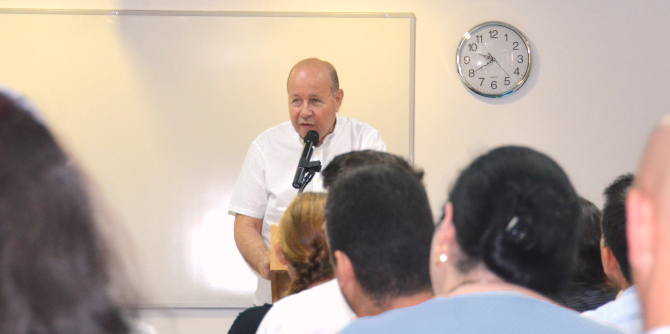

The opening of the 2018–2019 academic year at the Mandel School for Educational Leadership was marked by excitement, as well as sadness at our recent farewell from our faculty member Rabbi Shimon Adler, of blessed memory.
“I am thrilled that we have gathered this morning to launch the new academic year, and I am delighted to discover that I feel this excitement anew each time," said
Danny Bar Giora, director of the Mandel School for Educational Leadership, in his welcoming remarks to the incoming and continuing fellows. "This year," he continued, my happiness is mixed with sadness at the loss of our friend and faculty member Rabbi Shimon Adler, may his memory be a blessing, whom we will remember this evening at a memorial event.”

At the end of his remarks, Danny thanked
Moshe Vigdor, director general of the Mandel Foundation–Israel,
Jehuda Reinharz, president of the Mandel Foundation, and
Morton Mandel, chairman of the Mandel Foundation, for their immense contributions and support for the School.
“It takes courage to do the impossible,” said Moshe Vigdor, quoting A. D. Gordon. “I wish all of you, dear fellows, the personal and public courage to do the impossible.”
The academic year opened with a lecture by
Dr. Meir Buzaglo, a member of the Mandel Leadership Institute’s academic advisory committee and a senior lecturer in philosophy at the Hebrew University of Jerusalem. Buzaglo presented his views on the essential qualities of leaders. These include the ability to change ways of thinking, while continuously clarifying and honing ideas and worldview; the ability to achieve independence, both financial and ideological; the ability to reign in the need for recognition from others; and the ability to be satisfied with achieving the goals they set for themselves.

Each year, the Mandel School for Educational Leadership accepts some 20 fellows with proven management skills and strong intellectual capabilities, who are committed to leading change for the better in Israeli society and education. Studies at the school, which is a joint venture of the Mandel Foundation and the Ministry of Education, continue over a period of two years, during which fellows develop their personal and professional visions while broadening and deepening their professional knowledge, and translate them into an action plan for improving education in Israel.
{kind=link}